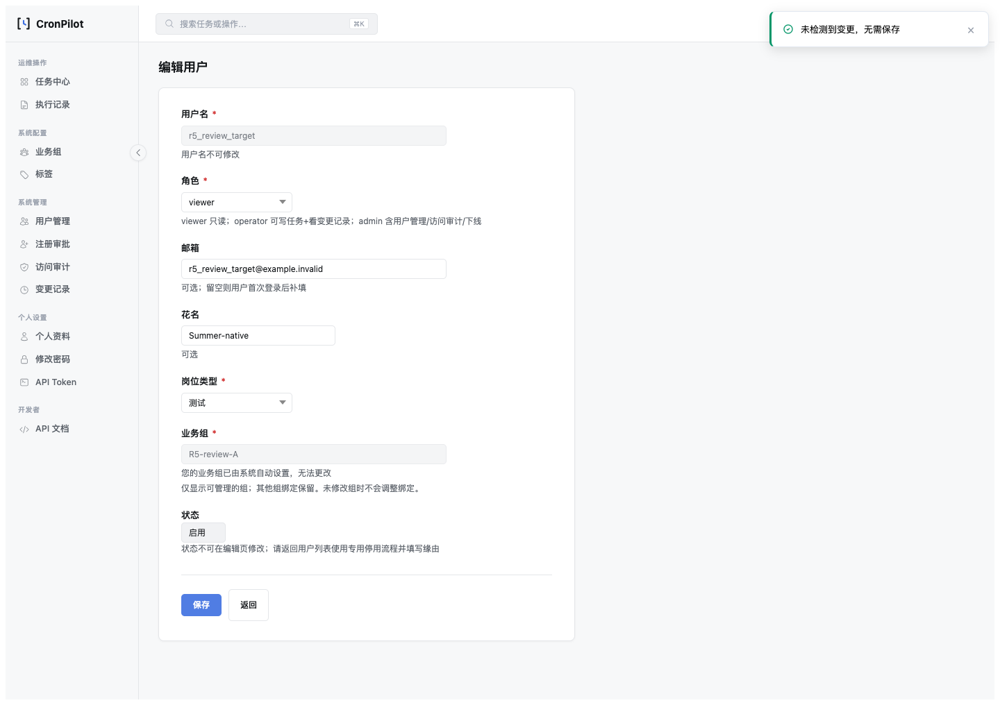

日期：2026-10-29 · rev.1 · 状态：已按确认设计实施并验证；尚未 commit。
| 版本 | 日期 | 变更 |
|---|---|---|
| rev.1 | 2026-10-29 | 按用户明确确认的 R5 设计实施签名编辑范围、同范围意图比较与外组保护；记录双后端和真实浏览器证据。 |
单组 A 管理员打开 A+B 用户，表单只提供 A，原始快照却是 A+B。未改组或只改花名时会被误判组变更；update_user_management 原全量替换循环可能删除 B。既有管理员 Scope 设计 §3.6/§7 已明确应保留范围外绑定。
意图层把“完整数据库集合”和“可编辑表单集合”当成同一语义比较；写入层把可见组提交当作全量替换指令。行为上的问题是沿用全局管理员表单假设实现受限管理员路径，未把已有外组保留契约转成独立验收场景。
原测试的单组管理员与目标都仅绑定同一组，多组目标测试则使用可管理全部目标组的管理员；缺少 actor A / target A+B 的交叉组合。仅检查成功与 Token 变化，没有在“只改花名”场景直接断言关系表零 DML。原签名篡改单测改最后一个 Base64 字符可能只改未使用补位，实际签名字节相同；现改签名首字符，确保真实改变签名字节。
最新专项结果：联合 236/236（311.900 秒，前 8 项 R5 测试）；随后增加两个直接覆盖原生回显与资料冲突的用例，10/10 专项通过（7.375 秒）。86/86 路由、18/18 真 DOM preflight、8/8 live 浏览器、P1 六项真实浏览器回归、SQLite 黄金路径均通过。全量 discovery 1020 项，439.590 秒，OK（skipped=12）；其发现时载入了 8 项 R5 用例，另两项新增后已由 10 项专项单独覆盖。Ruff、UI 契约、颜色、路由完整性通过。文档同步/完整性/链接、OPT、pending 门禁通过；复盘门禁 exit=0，仍有 41 条历史 Release 引用警告，未扩散修改。12 项跳过中 11 项因沙箱无法探测本地服务，1 项为既有孤儿 ID 演示分支；并非 1020 项全都实际执行。随后提供已有测试账号，在授权网络环境补跑 tests.test_csrf_integration tests.test_cron_ops_integration，11/11 通过（2.730 秒）；余下仅既有孤儿 ID 演示分支未执行。
.venv-py311/bin/python -m unittest tests.test_user_edit_scope_projection -v .venv-py311/bin/python -m unittest tests.test_user_edit_change_set tests.test_user_edit_scope_projection tests.test_user_edit_mysql_guard tests.test_rbac_global_scope_assignment tests.test_rbac_phase tests.test_user_reactivation tests.test_ajax_form_guard tests.test_redesign_sidebar -q .venv-py311/bin/python scripts/verify_user_edit_group_preflight.py --executable-path '/Applications/Google Chrome.app/Contents/MacOS/Google Chrome' .venv-py311/bin/python scripts/smoke_routes.py --check bash scripts/verify_golden_path.sh bash scripts/cronpilot.sh test
MySQL 8 使用独立新库 cronpilot_user_edit_verify_ae9c7fa82b6c，验收用户仅有 SELECT/INSERT/UPDATE/DELETE/CREATE/INDEX，无 DROP 权限（R5 的关系差异用例增加了专用库内 DELETE 权限），保留专用库。脚本 scripts/verify_user_edit_transaction_mysql.py --database-url <fresh-dedicated-url> 已扩充 R5 验收；schema 必须每次新建，不能复用已占用库。
MYSQL_USER_EDIT_U2: OK isolated_schema=1 lock_wait_observed=1 conflict=1 lock_release_ms=4.2 audit_rows=1 MYSQL_USER_EDIT_R5: OK profile_only=1 outside_preserved=1 replay=1 auth_conflict=1 concurrent_profile=1
Docker 控制接口无响应，但 MySQL 端口 33079 可用，故通过该实例的新专用库完成。未重启 Docker 或干扰其他容器。真实浏览器成功按 HTTP/导航与数据库差异判断，避免 Ajax 快速跳转后读取响应体的竞态。黄金路径接管 5001 端口，曾打断并行浏览器；已串行重跑并重新保留开发服务。
核对所有 build_user_edit_snapshot 调用（GET/helper、服务单测、Scope 测试、MySQL 工具）；均由数据库 actor 解析编辑范围或使用请求同源上下文。验签 v2 严格拒绝缺失/非法 editor_scope、旧版本及 actor/target 失配。创建/注册是完整赋权入口，继续原子集校验，不套用“保留旧外组”逻辑。update_user/set_user_groups 等内部专用调用并非本编辑表单入口，未扩大修改范围。
tests/test_user_edit_scope_projection.py 纳入现有 unittest discovery：actor A / target A+B，以及 actor A/C / target A+B 成为固定交叉矩阵；直接监测 SQL，断言资料-only 无关系 DML，并 mock Token/cache 副作用。入口 http://127.0.0.1:5001/rbac/login，测试账号 r5_review_single，密码 R5Review!2026。仅为本地测试 fixture，不是产品默认密码。账号只管理 R5-review-A，目标 r5_review_target（id=49）绑定 R5-review-A/B。测试专用账号/组保留，服务保持运行。最终重启后实际 POST 登录通过，登录页/复盘 HTML/MD 均为 200；完整目标组 [16,17]、可编辑组 [16]、原样保存业务 POST=0。补跑 HTTP 用例创建的两项专用任务已通过正式下线入口下线，避免后续定时触发；见最终就绪断言。
http://127.0.0.1:5001/rbac/users/edit?id=49：只能看到锁定 A，提示外部组保留。/rbac/users/edit?id=50（外部组目标）：拒绝进入编辑并回列表。operator 访问用户管理返回 403。8 项 live 结果 · 18 项 preflight · 验收输出摘要

已确认设计 · 文档索引 · Markdown 版